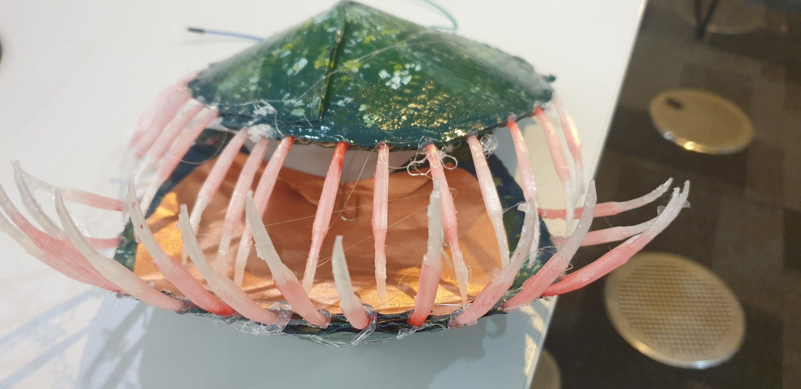
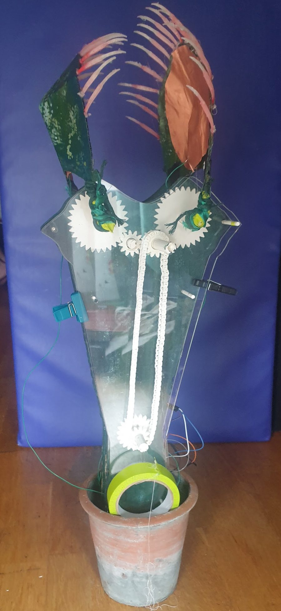

01
Touch
Shown at an exhibition. About 80 people tried it.

Touch the inside of the petals and they close.
Copper pads inside the petals sense contact through an MPR121 capacitive sensor. An Arduino sketch turns that into motion, and the gears close the petals gradually.

- TouchCopper pads inside the petals.
- MPR121A sensor that detects the contact.
- ArduinoDecides how far and how fast to move.
- MotorEased, so the closing is gradual.
- GearsPrinted and laser-cut parts carry it on.
- Petals closeThe plant shuts around your hand.